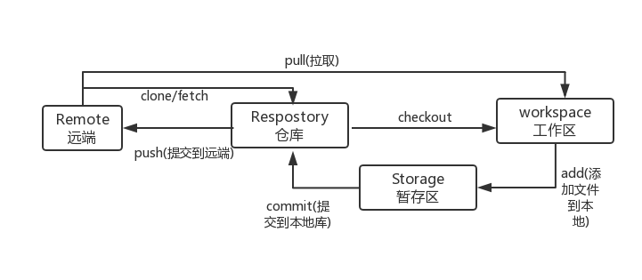
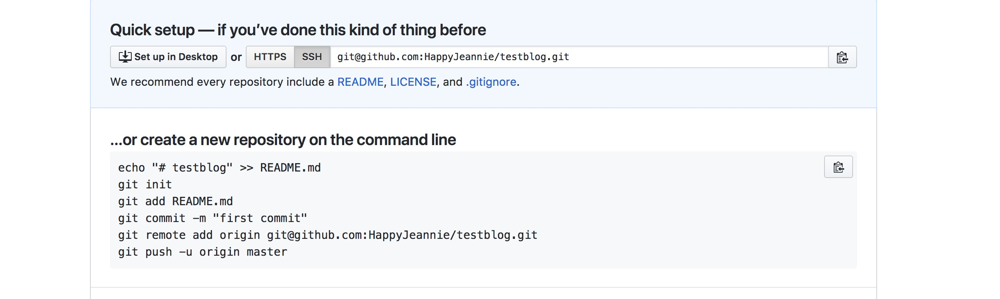

主要介绍一下git/github的使用及相关配置；
一、SSH Keys
这个相当于一把钥匙（在机器中即笔记本中进行配置），github相当于一把锁，每次发起请求是会去验证钥匙与锁是否配对。如何添加新的SSH Keys
二、git操作流程概览
这里指介绍常用的操作流程。

在这里不得不给ProcessOn打一波广告，第一次用这个，实在是好用，可以画流程图、思维导图，简直神器！
三、实例操作
1、项目建立
在github上新建一个Respostory(仓库)，新建完成后的页面为

2、在本地新建文件夹，命名为blog，依据上图提示进行操作。在blog文件夹中快速打开命令行工具，1
git init; // 在当前目录新建一个Git代码库
这个操作在当前目录下声生成了一个.git文件，默认不显示，可在命令行中输入 ls -a,即可看到所有被隐藏文件1
2
3
4
5
61. echo "# testblog" >> README.md //在当前目录下新建README.md,且文件内容为'testblog'
2. git add README.md //将README.md文件提交到问题暂存区
3. git commit -m "first commit" //将暂存区文件提交到本地仓库，且本次提交记录为'first commit'
4. //以上commit命令也可用git commit -v来执行，区别是-v情况下会启动编辑器，输入本次修改的详细内容
5. git remote add origin git@github.com:HappyJeannie/testblog.git //添加远程仓库
6. git push -u origin master // 将本地仓库中的文件推送到远端，在你的github项目中便可以查看到刚刚新建的文件
四、操作用遇到的问题
提交到远端并不是所有人都可以提交的，所以输入上述命令的过程中，输入第6行命令后会报错，因为我们本地并未生成SSH Keys。此时我们需要打开登录状态下的github官网，点击个人头像->Settings->SSH and GPG keys->New SSH Keys，如何新SSH Keys请参考本文第一条。
在添加完成SSH Keys后，在重复实力操作部分，即可完成本地文件到github文件的提交。
至此，本次介绍就暂时这么多，如有错误，敬请指正。后续会持续更新。
本文将转载至个人的简书以及知乎。个人原创，转载请注明出处。